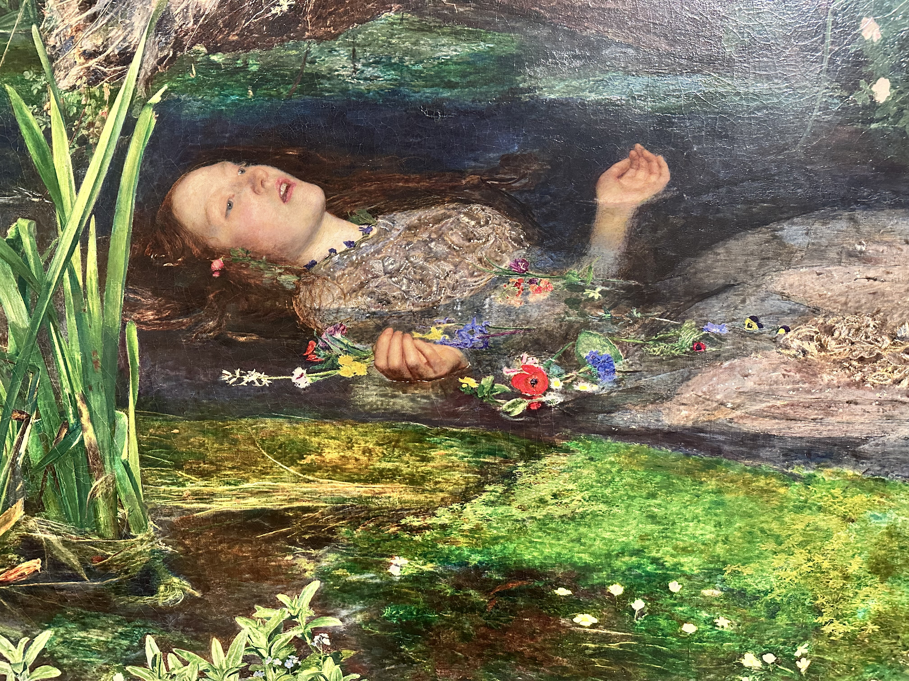
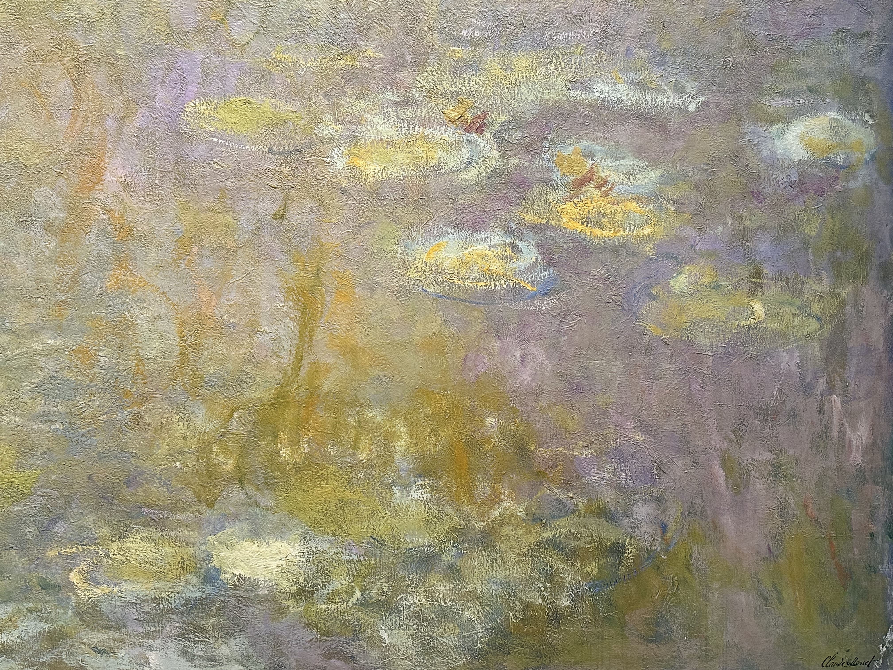
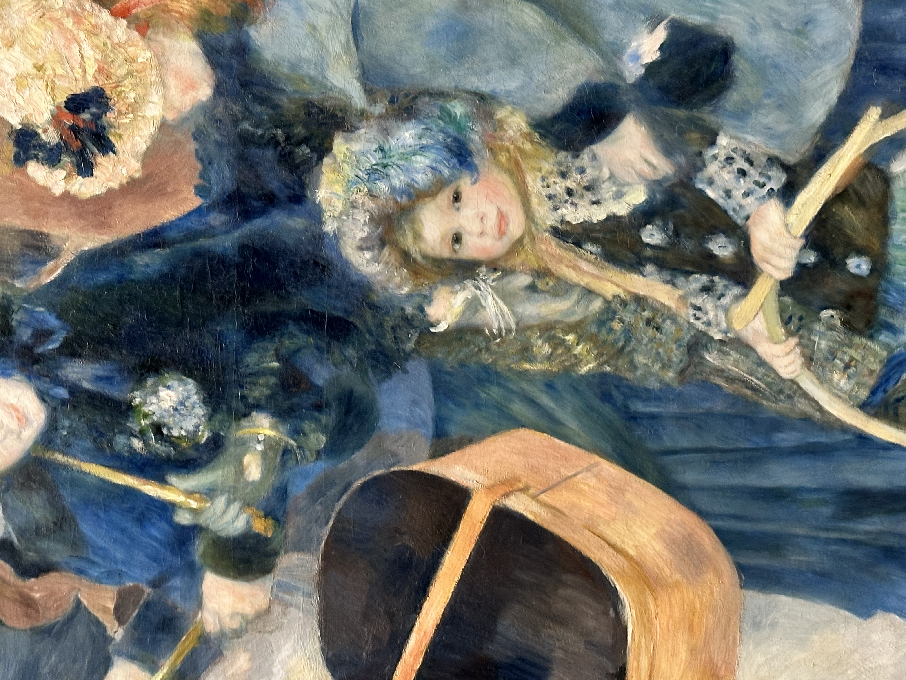
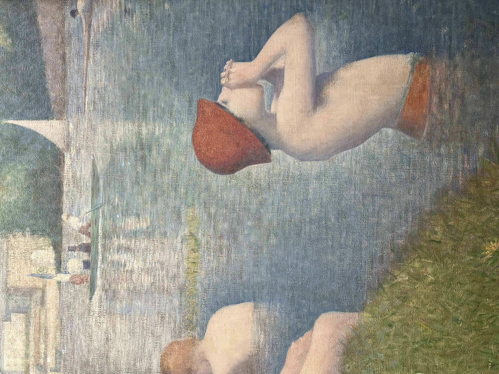
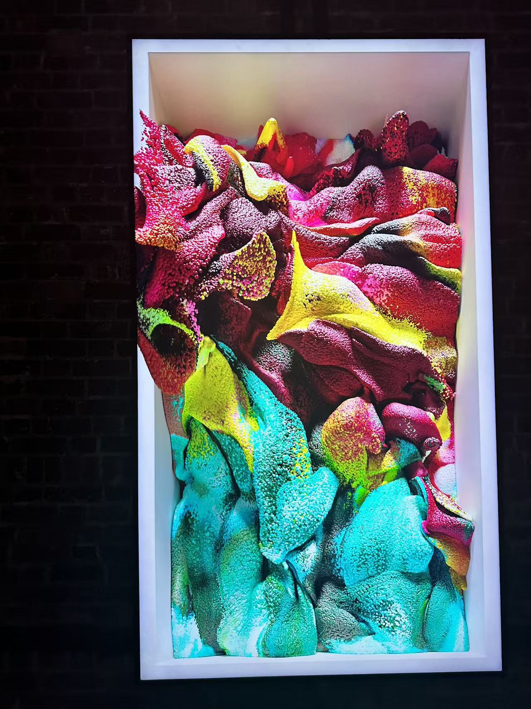
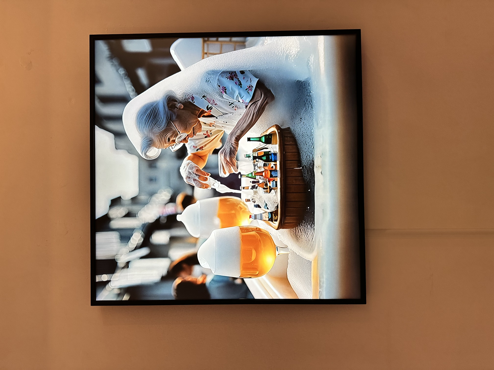

Close ✕
I pay attention to how things are made — paintings, systems, ideas, machines. Right now that attention is pointed at AI and what it means for the physical world.
I photograph paintings up close — not to document them, but because the texture of oil paint two inches from your face is a different image than what the artist intended. Click to view.






I'm not an engineer. But I watch closely — following the people building things, reading what I can, trying to understand what's actually changing rather than what's being announced.
Nexart started with a simple frustration: the infrastructure connecting artists to collectors — especially women artists in places where opportunity is scarce — was broken or absent. The original idea was to use NFTs as a bridge: provable ownership, global access.
The NFT market moved in ways that made that harder. But while watching the space closely, I noticed something else. As AI agents become more capable, the question of identity becomes critical — how does an agent prove it is who it says it is? How do you give an AI a verifiable, unique identity that persists?
NFTs are actually well-suited to this. So Nexart evolved. I drafted a patent around AI agent identity and filed it in the UK. It's pending. The original mission is still there — the infrastructure question is just unsolved.
The films I keep coming back to share something: they make you believe in a reality with different rules — not by explaining it, but by committing to it completely.
Last updated · July 2026